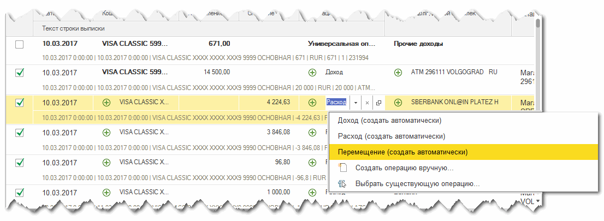
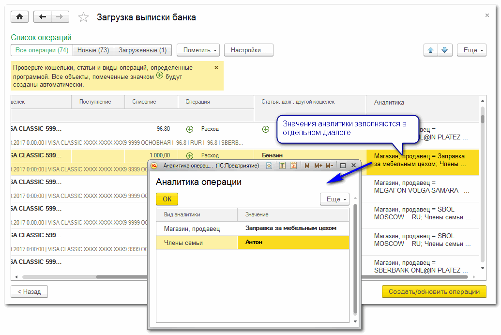

Загрузка выписки банка
Обработка автоматически создает операцию по каждой строке банковской выписки.
Так же эту обработку удобно использовать для наглядной сверки учтенных операций с содержимым банковской выписки.
Порядок загрузки выписки
1. Получите из своего банка выписку или отчет по операциям за любой период в каком-либо табличном виде. Это могут быть файлы в формате электронных таблиц MS Excel, OpenDocument или текстовые файлы с разделилятями (*.csv).
Команды для просмотра и выгрузки выписки следует искать в личном кабинете на сайте банка. Обычно банки позволяют выбирать формат файла выписки и способ ее получения: отправкой по электронной почте или прямым скачиванием на диск.
2. Откройте Загрузку выписки банка, и в поле Файл выписки укажите путь к полученному из банка файлу. Если ваш банк выводит на экран список операций в виде таблицы, можно обойтись без выгрузки-загрузки файла: просто скопируйте таблицу на странице банка и вставьте её в таблицу загрузки выписки. Подробней копирование и вставка таблицы описаны ниже.
3. Выберите Правило чтения, с помощью которого нужно обработать выписку. Каждое правило описывает, в какой ячейке банковской выписки находится номер счета, из каких колонок брать сумму, дату и прочую информации. Единого формата предоставления выписки у банков нет, к тому же банки время от времени меняют форматы выписок. Но с помощью правил можно быстро настроить загрузку под формат любого банка и собственные предпочтения.
Нажмите ссылку Показать файл, чтобы убедиться, что выбрано нужное правило и в таблице подсвечены правильные колонки и ячейки.
Наведите указатель мыши на красный треугольничек в первой строке таблицы - во всплывающей подсказке программа покажет, какие поля будут заполняться из этой колонки.
Ширину колонок и высоту строк можно менять как в любом другом табличном документе.
4. Нажмите кнопку Прочитать > для автоматического разбора таблицы по операциям.
Программа обработает таблицу выписки по указанному проавилу и выведет список операций. Все объекты, для которых программа смогла найти соответствие, будут выделены жирным шрифтом. Если какие-то объекты (например, кошельки, статьи, значения аналитики) встречаются впервые, программа пометит их символом  . Такие объекты можно создать или выбрать вручную, или позволить программе создать их автоматически.
. Такие объекты можно создать или выбрать вручную, или позволить программе создать их автоматически.
Для кошельков и статей, создаваемых автоматически, в настройках можно задать группы (см. раздел этой справки "Настройка").
5. Проверьте все строки в списке операций. При необходимости поправьте кошельки, статьи и виды операций, подставленные программой. Обычно, самая длительная проверка требуется при загрузке первой выписки по каждому счету: нужно указать счет, изменить вид некоторых операций, уточнить статьи и т.д.. Программа запоминает сделанные пользователем изменения и при загрузке последующих выпискок подставляет нужные значения автоматичеки.
Для удобства проверки в нижней части каждой строки выводится текст всех ячеек из соответствующей строки банковской выписки.
Снимите пометку с тех строк, которые не нужно загружать. Например, с операций перемещения по счетам, которые уже загружены по другой выписке.
Любую статью, кошелек и аналитику в этой таблице можно указать и изменить вручную. Все остальные кошельки и статьи, помеченные значком , будут созданы программой автоматически, после нажатия на кнопку "Создать/обновить операции".
Обратите внимание: программа запоминает, какому тексту выписки соответствуют созданные или выбранные кошельки, статьи, долги и значения аналитики. В следующий раз при обнаружении такого же текста программа автоматически подставит те же объекты, даже если наименования этих объектов будут изменены.
Например, при загрузке операций программа автоматически создала статью "SAFERTINO KAPITAL", а пользователь переименовал статью в "Финансовые услуги". В следующий раз найдя в колонке "Статья расхода" текст "SAFERTINO KAPITAL" программа автоматически подставит статью "Финансовые услуги".
В колонке Операция Вы можете изменить вид операции или выбрать операцию, введенную ранее. Например, вместо "Расхода" можно выбрать "Перемещение" и в колонке "Статья" указать кошелек, в который перемещаются деньги.
Чтобы вместо расхода создать, например, возврат долга используйте команду Создать операцию вручную и выбирайте нужый вид операции. Программа откроет фоому выбранного вида операции и заполнит в ней большинство полей. При чтении следующих выписок программа постарается определять такие операции автоматически (если в выписке для этого будет достаточно информации).

Для редактирования аналитики дважды кликните мышью в колонке Аналитика.

Значения аналитики редактируются в отдельном диалоге аналогично редактированию статей и кошельков.
Обратите внимание: если операция для строки выписки уже создана (текст в колонке "Операция" выделен жирным шрифтом), редактировать значения аналитики можно только в форме самой операции.
6. Нажмите кнопку Создать/обновить операции.
Для всех помеченных строк выписки программа создаст новые операции, или перезапишет операции, созданные ранее.
После загрузки можно проверить статистику: в верхней части списка, на кнопках отбора Новые, Загруженные указывается количество незагруженных и загруженных строк выписки.
В настройках обработки можно задать группы для кошельков и статей, автоматически создаваемых при загрузке банковской выписки. Это упростит работу с автоматически созданными элементами и уменьшит количество статей верхного уровня.
Для каждого банка приходится использовать отдельные правила чтения их выписок. Если среди уже имеющихся правил не найдется подходящего, его можно создать самостоятельно:
1. Выберите файл выписки, как описано выше.
2. Выберите команду Создать новое правило из меню редактирования правила чтения

3. Укажите, из каких ячеек таблицы программа должна извлекать значения показателей, необходимых для записи операций.
Удобней всего это делать с помощью мыши: сначала перетащите мышью показатель "Начало таблицы операций" в первую ячейку таблицы, чтобы программа смогла отличать значения, расположенные в колонках таблицы от прочих показателей, например, расположенных в названии таблицы.
После этого перетаскивайте остальные показатели в колонку или ячейку, из которых нужно извлекать их значения.
Если какой-либо текст нужно составить из несколькиз ячеек и колонок, перетащите название показателя в нужные ячейки удерживая в нажатом положении клавишу Ctrl.
Сохраните правило и выполните чтение выписки.
Аналогчиным образом можно изменить созданные ранее правила чтения выписки.
Загрузка выписки из буфера обмена
Обработка яаляется универсальной и позволяет создавать операции на основаниии почти любого табличного отчета о банковских транзакциях. Например, в обработке можно использовать не файл, а таблицу, скопированную в личном кабинете пользователя банка: выделите на сайте нужные строки таблицы и скопируйте их с помощью контекстного меню или сочетания клавиш Ctrl+C. После этого нажмите на ссылку Показать файл чтобы открыть таблицу выписки.
В открывшейся таблице выделите самую первую ячейку и вставьте содержимое буфера обмена с помощью контекстного меню или комбинации клавиш Ctrl+v.
После вставки выберите подходящее правило чтения и прочтите выписку как описано выше.
При желании таблицу выписки можно сохранить в файл, выбрав соответствующую команду в главном меню программы.
Быстрая сверка с выпиской банка
Обработку удобно использовать для наглядной сверки записанных операций с выпиской, полученной из банка. Например, если записи делались вручную на разных компьютерах и мобильных устройствах, полезно убедиться, что записаны все движения денег и все суммы указаны точно.
Выполните чтение выписки, как описано выше.
В списке операций все загруженные строки будут выделены жирным шрифтом. С помощью кнопки "Новые (…)" в верхней части списка можно отобрать только те строки, которым не нашлось подходящих операци (не совпали суммы или операция просто не записана). С помощью выпадающего меню в колонке "Операция" можно выбрать существующую операцию для уточнения суммы, либо создать новую операцию.
Дополнительная информация: Правила чтения табличных документов